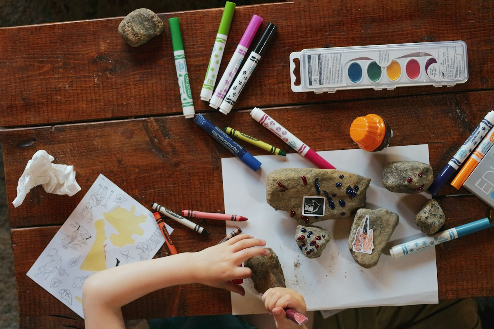
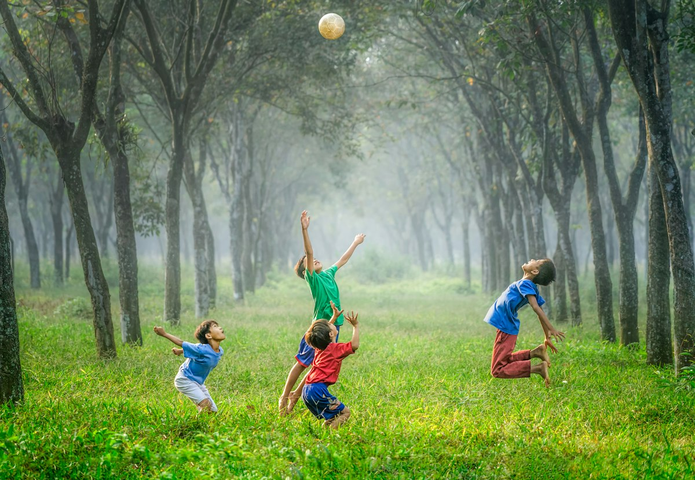

Practical Life
Real tasks like pouring, sweeping, and caring for plants build coordination and independence.

Montessori-inspired learning pod
At Little Roots Montessori, everyday moments become meaningful learning—guided by curiosity, care, and respect for each child's natural rhythm.
Our Belief
Montessori education honors the whole child—mind, body, and heart. In our prepared environment, children choose purposeful work, develop concentration, and build independence through hands-on experiences.
Our educators guide with gentle intention, offering lessons at the right moment and creating space for wonder, confidence, and community to grow naturally.

Hands-on Learning
Real tasks like pouring, sweeping, and caring for plants build coordination and independence.
Materials refine the senses and help children classify, compare, and understand the world.
Stories, sounds, and rich conversation nurture vocabulary, expression, and early literacy.
Concrete materials make quantity, patterns, and number relationships joyful and clear.
Why Families Choose Us
Small group learning allows educators to truly know and support each child.
We guide with patience and trust, nurturing confidence and emotional security.
Children learn by doing, exploring materials that engage mind and body.
Natural textures, light, and greenery create a calm space for growth.
Parent Voices
"Our daughter has blossomed at Little Roots. She is more independent, curious, and excited to learn every single day."
"The calm environment and caring teachers made the transition so easy. We love receiving thoughtful updates about our son's progress."
"Little Roots prepared our child beautifully for the next step. The balance of independence, kindness, and academics is wonderful."

Visit Us
Experience the warmth of our classrooms, meet our educators, and see how Montessori learning comes to life at Little Roots.
Schedule a Visit